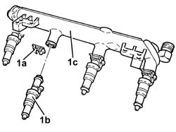
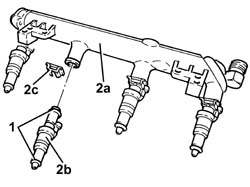

1056B70 INJECTOR (ONE) - R + R WITH FUEL MANIFOLD PIPE REMOVED - INCLUDES SEAL REPLACEMNT
- Path
- Procedures > 10 ENGINE > 1056 PETROL INJECTION SYSTEM > 1056B MULTI-POINT INJECTION SYSTEM (MPI) > 1056B70 INJECTOR (ONE) - R + R WITH FUEL MANIFOLD PIPE REMOVED - INCLUDES SEAL REPLACEMNT
- Kind
- repair procedure (removal / refitting; the operation number is the code)
- Applies to
- engines: 1.8, 2.2; all production periods
- Interactive page
- https://sloeber94.github.io/elrnDB-fCrm/en/#/194000320
Applies to: engines: 2.2; all production periods
 Removing
Removing
 Refitting
Refitting1. Working at the bench, withdraw clip (1a) and remove injector (1b) from the common rail (1c).

Applies to: engines: 2.2; all production periods
Refitting
Removing1. Replace the seals on the injector.
2. Refit the common rail (2a), injector (2b) and secure with clip (2c).

Applies to: engines: 1.8; all production periods
Op. 1056B60 SINGLE FUEL MANIFOLD PIPE, WITH INJECTORS - R.R.